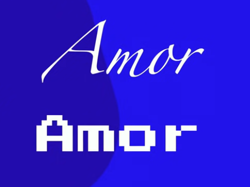
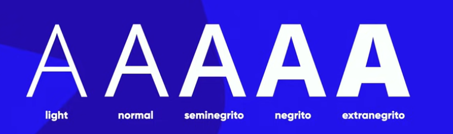

Aula de Tipografias
O que é tipografia?
a tipografia é a capacidade de imprimir e compor com diversas maneiras, é o estudo de como você vai colocar coisas em papel/telas.
emoções e tipografia
os tipos das letras também transmitem emoções, os maiores designers focam em três coisas:
- boas imagens
- boas cores
- boas letras
não adianta você ter um ótimo conteudo sem ter uma boa forma grafica/bonita de apresenta-lo.
exemplos:
imagine que você quer colocar a palavra AMOR em destaque, qual dessas fontes você acha melhor?

provavelmente você escolheu a primeira, pois ela transmite algo suave e delicado, ja a segunda representa algo mais duro.
Anatomia dos tipos
o tipo são as letras/como você vai desenhas as letras, a letra X é o ponto de partida de todas as criações de fontes, pois existe uma métrica chamada altura X que basicamente define a altura base de todas as letras minusculas, temos também a altura das maiusculas, as letras minusculas que vazam para cima ou para baixo, chama-se a que vaza pra cima ascendente e a pra baixo descendente e a altura do corpo que o que você configura no CSS. em algumas fontes as letras tem um vazamento, esse vazamento se chama serifa.
Qual a importancia da serifa?
a serifa cria uma linha imaginaria que você olha e diz "serifa", isso facilita e leitura de algo, não importa em qual ordem as letras de uma palavra estão, a unica coisa importante é que a primeira e ultima estejam no lugar certo, isto é porque nós não lemos cada letra isolada, mas a palavra como um todo.
Analizando as anotomias
a letra K a parte inicial dela possui uma HASTE, a letra A possui uma HASTE e um FILETE que é o que fica no meio dela, o N tem um um ARCO na ponta dela, o A na ponta de cima dele possui uma VÉRTICE, o B tem um ESPORÃO que um pontinho na parte de atras dele que "segura" ele e o R em sua ponta possui um TERMINAL, a ponta que se move pra cima da letra K se chama braço, a parte que vai pra baixo se chama perna e na ponta da perna tem o pé, no S no meio dele temos uma ESPINHA, no B temos uma BARRIGA, a parte das letras que são fechadas se chamam OLHO, a parte de baixo da letras que vazam da altura X se chamam CAUDA.
O que são Glifos e Fontes
o glifo são as letras e as fontes são as familias de glifos, algumas fontes tem varias formas de representar o mesmo glifo, como é o caso do OPEN SANS, que tem 5 formas de mostrar a letra A, EXEMPLO:

e isso se chama FAMILIA TIPOGRAFICA, nem todas as fontes tem a familia tipografica, porém todas fontes tem a classificação normal.
Categorias de fontes
existem inumeras formas de escrever algo, como a fonte TIMESNEWROMAN ela é uma fonte classificada como SERIFADA, a OPEN SANS é classificada com SANS-SERIF, algumas letras se chamam de MONOESPAÇADAS, que basicamente é a fonte que tem sempre o mesmo espaço de diferença, HANDWRITING simula a caligrafia humana e a fonte DISPLAY é a fonte que não compartilha de nada das outras fontes.